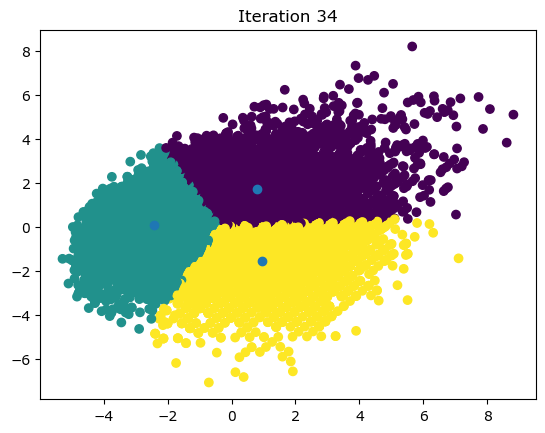

Clustering KNN#
import pandas as pd
import numpy as np
players = pd.read_csv("players_22.csv")
/private/var/mobile/Containers/Data/Application/6886C219-CE39-4A3F-BF34-486B937A2F19/tmp/ipykernel_3066/2061566770.py:1: DtypeWarning: Columns (25,108) have mixed types. Specify dtype option on import or set low_memory=False.
players = pd.read_csv("players_22.csv")
players.head()
| sofifa_id | player_url | short_name | long_name | player_positions | overall | potential | value_eur | wage_eur | age | ... | lcb | cb | rcb | rb | gk | player_face_url | club_logo_url | club_flag_url | nation_logo_url | nation_flag_url | |
|---|---|---|---|---|---|---|---|---|---|---|---|---|---|---|---|---|---|---|---|---|---|
| 0 | 158023 | https://sofifa.com/player/158023/lionel-messi/... | L. Messi | Lionel Andrés Messi Cuccittini | RW, ST, CF | 93 | 93 | 78000000.0 | 320000.0 | 34 | ... | 50+3 | 50+3 | 50+3 | 61+3 | 19+3 | https://cdn.sofifa.net/players/158/023/22_120.png | https://cdn.sofifa.net/teams/73/60.png | https://cdn.sofifa.net/flags/fr.png | https://cdn.sofifa.net/teams/1369/60.png | https://cdn.sofifa.net/flags/ar.png |
| 1 | 188545 | https://sofifa.com/player/188545/robert-lewand... | R. Lewandowski | Robert Lewandowski | ST | 92 | 92 | 119500000.0 | 270000.0 | 32 | ... | 60+3 | 60+3 | 60+3 | 61+3 | 19+3 | https://cdn.sofifa.net/players/188/545/22_120.png | https://cdn.sofifa.net/teams/21/60.png | https://cdn.sofifa.net/flags/de.png | https://cdn.sofifa.net/teams/1353/60.png | https://cdn.sofifa.net/flags/pl.png |
| 2 | 20801 | https://sofifa.com/player/20801/c-ronaldo-dos-... | Cristiano Ronaldo | Cristiano Ronaldo dos Santos Aveiro | ST, LW | 91 | 91 | 45000000.0 | 270000.0 | 36 | ... | 53+3 | 53+3 | 53+3 | 60+3 | 20+3 | https://cdn.sofifa.net/players/020/801/22_120.png | https://cdn.sofifa.net/teams/11/60.png | https://cdn.sofifa.net/flags/gb-eng.png | https://cdn.sofifa.net/teams/1354/60.png | https://cdn.sofifa.net/flags/pt.png |
| 3 | 190871 | https://sofifa.com/player/190871/neymar-da-sil... | Neymar Jr | Neymar da Silva Santos Júnior | LW, CAM | 91 | 91 | 129000000.0 | 270000.0 | 29 | ... | 50+3 | 50+3 | 50+3 | 62+3 | 20+3 | https://cdn.sofifa.net/players/190/871/22_120.png | https://cdn.sofifa.net/teams/73/60.png | https://cdn.sofifa.net/flags/fr.png | NaN | https://cdn.sofifa.net/flags/br.png |
| 4 | 192985 | https://sofifa.com/player/192985/kevin-de-bruy... | K. De Bruyne | Kevin De Bruyne | CM, CAM | 91 | 91 | 125500000.0 | 350000.0 | 30 | ... | 69+3 | 69+3 | 69+3 | 75+3 | 21+3 | https://cdn.sofifa.net/players/192/985/22_120.png | https://cdn.sofifa.net/teams/10/60.png | https://cdn.sofifa.net/flags/gb-eng.png | https://cdn.sofifa.net/teams/1325/60.png | https://cdn.sofifa.net/flags/be.png |
5 rows × 110 columns
features = ["overall", "potential", "wage_eur", "value_eur", "age"]
players = players.dropna(subset=features)
data = players[features].copy()
data
| overall | potential | wage_eur | value_eur | age | |
|---|---|---|---|---|---|
| 0 | 93 | 93 | 320000.0 | 78000000.0 | 34 |
| 1 | 92 | 92 | 270000.0 | 119500000.0 | 32 |
| 2 | 91 | 91 | 270000.0 | 45000000.0 | 36 |
| 3 | 91 | 91 | 270000.0 | 129000000.0 | 29 |
| 4 | 91 | 91 | 350000.0 | 125500000.0 | 30 |
| ... | ... | ... | ... | ... | ... |
| 19234 | 47 | 52 | 1000.0 | 70000.0 | 22 |
| 19235 | 47 | 59 | 500.0 | 110000.0 | 19 |
| 19236 | 47 | 55 | 500.0 | 100000.0 | 21 |
| 19237 | 47 | 60 | 500.0 | 110000.0 | 19 |
| 19238 | 47 | 60 | 500.0 | 110000.0 | 19 |
19165 rows × 5 columns
Pseudocode#
High level#
Scale data to standardize values
Initialize random centroids
Get labels for each data point
Create new centroids
Plot the centroids
Repeat 3-5 until the centroids stop changing
data = ((data - data.min()) / (data.max() - data.min())) * 10 + 1
data.describe()
| overall | potential | wage_eur | value_eur | age | |
|---|---|---|---|---|---|
| count | 19165.000000 | 19165.000000 | 19165.000000 | 19165.000000 | 19165.000000 |
| mean | 5.078302 | 5.799998 | 1.243826 | 1.146473 | 4.403716 |
| std | 1.496262 | 1.323418 | 0.557253 | 0.392477 | 1.750932 |
| min | 1.000000 | 1.000000 | 1.000000 | 1.000000 | 1.000000 |
| 25% | 4.043478 | 4.913043 | 1.014306 | 1.024022 | 2.851852 |
| 50% | 5.130435 | 5.782609 | 1.071531 | 1.049796 | 4.333333 |
| 75% | 6.000000 | 6.652174 | 1.214592 | 1.102634 | 5.814815 |
| max | 11.000000 | 11.000000 | 11.000000 | 11.000000 | 11.000000 |
data.head()
| overall | potential | wage_eur | value_eur | age | |
|---|---|---|---|---|---|
| 0 | 11.000000 | 10.565217 | 10.141631 | 5.020341 | 7.666667 |
| 1 | 10.782609 | 10.347826 | 8.711016 | 7.159616 | 6.925926 |
| 2 | 10.565217 | 10.130435 | 8.711016 | 3.319231 | 8.407407 |
| 3 | 10.565217 | 10.130435 | 8.711016 | 7.649329 | 5.814815 |
| 4 | 10.565217 | 10.130435 | 11.000000 | 7.468908 | 6.185185 |
def random_centroids(data, k):
centroids = []
for i in range(k):
centroid = data.apply(lambda x: float(x.sample()))
centroids.append(centroid)
return pd.concat(centroids, axis=1)
centroids = random_centroids(data, 5)
/private/var/mobile/Containers/Data/Application/6886C219-CE39-4A3F-BF34-486B937A2F19/tmp/ipykernel_3066/1845334667.py:4: FutureWarning: Calling float on a single element Series is deprecated and will raise a TypeError in the future. Use float(ser.iloc[0]) instead
centroid = data.apply(lambda x: float(x.sample()))
centroids
| 0 | 1 | 2 | 3 | 4 | |
|---|---|---|---|---|---|
| overall | 4.695652 | 7.086957 | 5.782609 | 6.217391 | 7.086957 |
| potential | 6.652174 | 7.739130 | 6.217391 | 2.956522 | 4.695652 |
| wage_eur | 1.042918 | 1.004292 | 1.001431 | 1.071531 | 1.128755 |
| value_eur | 1.015001 | 1.047219 | 1.195421 | 1.020156 | 1.040775 |
| age | 5.814815 | 2.851852 | 3.222222 | 4.703704 | 1.740741 |
def get_labels(data, centroids):
distances = centroids.apply(lambda x: np.sqrt(((data - x) ** 2).sum(axis=1)))
return distances.idxmin(axis=1)
labels = get_labels(data, centroids)
labels.value_counts()
2 9308
0 5802
1 2124
3 1931
Name: count, dtype: int64
def new_centroids(data, labels, k):
centroids = data.groupby(labels).apply(lambda x: np.exp(np.log(x).mean())).T
return centroids
from sklearn.decomposition import PCA
import matplotlib.pyplot as plt
from IPython.display import clear_output
def plot_clusters(data, labels, centroids, iteration):
pca = PCA(n_components=2)
data_2d = pca.fit_transform(data)
centroids_2d = pca.transform(centroids.T)
clear_output(wait=True)
plt.title(f'Iteration {iteration}')
plt.scatter(x=data_2d[:,0], y=data_2d[:,1], c=labels)
plt.scatter(x=centroids_2d[:,0], y=centroids_2d[:,1])
plt.show()
max_iterations = 100
centroid_count = 3
centroids = random_centroids(data, centroid_count)
old_centroids = pd.DataFrame()
iteration = 1
while iteration < max_iterations and not centroids.equals(old_centroids):
old_centroids = centroids
labels = get_labels(data, centroids)
centroids = new_centroids(data, labels, centroid_count)
plot_clusters(data, labels, centroids, iteration)
iteration += 1

centroids
| 0 | 1 | 2 | |
|---|---|---|---|
| overall | 6.324628 | 3.436536 | 5.200636 |
| potential | 7.100439 | 5.357557 | 4.894208 |
| wage_eur | 1.456630 | 1.031374 | 1.130961 |
| value_eur | 1.311183 | 1.029343 | 1.049892 |
| age | 3.874397 | 2.674807 | 5.963956 |
labels.value_counts()
2 7188
1 6162
0 5815
Name: count, dtype: int64
players[labels == 0][["short_name"] + features]
| short_name | overall | potential | wage_eur | value_eur | age | |
|---|---|---|---|---|---|---|
| 0 | L. Messi | 93 | 93 | 320000.0 | 78000000.0 | 34 |
| 1 | R. Lewandowski | 92 | 92 | 270000.0 | 119500000.0 | 32 |
| 2 | Cristiano Ronaldo | 91 | 91 | 270000.0 | 45000000.0 | 36 |
| 3 | Neymar Jr | 91 | 91 | 270000.0 | 129000000.0 | 29 |
| 4 | K. De Bruyne | 91 | 91 | 350000.0 | 125500000.0 | 30 |
| ... | ... | ... | ... | ... | ... | ... |
| 13267 | K. Nagera | 63 | 80 | 8000.0 | 1300000.0 | 19 |
| 13351 | Llabrés | 63 | 81 | 3000.0 | 1200000.0 | 19 |
| 14026 | M. Azeez | 62 | 83 | 4000.0 | 1300000.0 | 18 |
| 14144 | H. Mejbri | 62 | 84 | 6000.0 | 1300000.0 | 18 |
| 14349 | R. Lavia | 62 | 85 | 700.0 | 1200000.0 | 17 |
5815 rows × 6 columns
from sklearn.cluster import KMeans
kmeans = KMeans(3)
kmeans.fit(data)
/private/var/containers/Bundle/Application/BDB2F03A-48CB-4984-82CA-190D8BC5581E/Carnets-sci.app/Library/lib/python3.11/site-packages/sklearn/cluster/_kmeans.py:870: FutureWarning: The default value of `n_init` will change from 10 to 'auto' in 1.4. Set the value of `n_init` explicitly to suppress the warning
warnings.warn(
KMeans(n_clusters=3)In a Jupyter environment, please rerun this cell to show the HTML representation or trust the notebook.
On GitHub, the HTML representation is unable to render, please try loading this page with nbviewer.org.
KMeans(n_clusters=3)
pd.DataFrame(kmeans.cluster_centers_, columns=features).T
| 0 | 1 | 2 | |
|---|---|---|---|
| overall | 3.873971 | 6.798739 | 5.230949 |
| potential | 5.665009 | 7.247227 | 4.902857 |
| wage_eur | 1.043807 | 1.725143 | 1.126631 |
| value_eur | 1.039275 | 1.457660 | 1.044868 |
| age | 2.896812 | 4.466826 | 6.117672 |
import matplotlib.pyplot as plt
import numpy as np
np.random.seed(42)
def euclidean_distance(x1, x2):
return np.sqrt(np.sum((x1 - x2) ** 2))
class KMeans:
def __init__(self, K=5, max_iters=100, plot_steps=False):
self.K = K
self.max_iters = max_iters
self.plot_steps = plot_steps
# list of sample indices for each cluster
self.clusters = [[] for _ in range(self.K)]
# the centers (mean feature vector) for each cluster
self.centroids = []
def predict(self, X):
self.X = X
self.n_samples, self.n_features = X.shape
# initialize
random_sample_idxs = np.random.choice(self.n_samples, self.K, replace=False)
self.centroids = [self.X[idx] for idx in random_sample_idxs]
# Optimize clusters
for _ in range(self.max_iters):
# Assign samples to closest centroids (create clusters)
self.clusters = self._create_clusters(self.centroids)
if self.plot_steps:
self.plot()
# Calculate new centroids from the clusters
centroids_old = self.centroids
self.centroids = self._get_centroids(self.clusters)
# check if clusters have changed
if self._is_converged(centroids_old, self.centroids):
break
if self.plot_steps:
self.plot()
# Classify samples as the index of their clusters
return self._get_cluster_labels(self.clusters)
def _get_cluster_labels(self, clusters):
# each sample will get the label of the cluster it was assigned to
labels = np.empty(self.n_samples)
for cluster_idx, cluster in enumerate(clusters):
for sample_index in cluster:
labels[sample_index] = cluster_idx
return labels
def _create_clusters(self, centroids):
# Assign the samples to the closest centroids to create clusters
clusters = [[] for _ in range(self.K)]
for idx, sample in enumerate(self.X):
centroid_idx = self._closest_centroid(sample, centroids)
clusters[centroid_idx].append(idx)
return clusters
def _closest_centroid(self, sample, centroids):
# distance of the current sample to each centroid
distances = [euclidean_distance(sample, point) for point in centroids]
closest_index = np.argmin(distances)
return closest_index
def _get_centroids(self, clusters):
# assign mean value of clusters to centroids
centroids = np.zeros((self.K, self.n_features))
for cluster_idx, cluster in enumerate(clusters):
cluster_mean = np.mean(self.X[cluster], axis=0)
centroids[cluster_idx] = cluster_mean
return centroids
def _is_converged(self, centroids_old, centroids):
# distances between each old and new centroids, fol all centroids
distances = [
euclidean_distance(centroids_old[i], centroids[i]) for i in range(self.K)
]
return sum(distances) == 0
def plot(self):
fig, ax = plt.subplots(figsize=(12, 8))
for i, index in enumerate(self.clusters):
point = self.X[index].T
ax.scatter(*point)
for point in self.centroids:
ax.scatter(*point, marker="x", color="black", linewidth=2)
plt.show()
# Testing
if __name__ == "__main__":
from sklearn.datasets import make_blobs
X, y = make_blobs(
centers=3, n_samples=500, n_features=2, shuffle=True, random_state=40
)
print(X.shape)
clusters = len(np.unique(y))
print(clusters)
k = KMeans(K=clusters, max_iters=150, plot_steps=True)
y_pred = k.predict(X)
k.plot()
(500, 2)
3
from collections import Counter
import numpy as np
def euclidean_distance(x1, x2):
return np.sqrt(np.sum((x1 - x2) ** 2))
class KNN:
def __init__(self, k=3):
self.k = k
def fit(self, X, y):
self.X_train = X
self.y_train = y
def predict(self, X):
y_pred = [self._predict(x) for x in X]
return np.array(y_pred)
def _predict(self, x):
# Compute distances between x and all examples in the training set
distances = [euclidean_distance(x, x_train) for x_train in self.X_train]
# Sort by distance and return indices of the first k neighbors
k_idx = np.argsort(distances)[: self.k]
# Extract the labels of the k nearest neighbor training samples
k_neighbor_labels = [self.y_train[i] for i in k_idx]
# return the most common class label
most_common = Counter(k_neighbor_labels).most_common(1)
return most_common[0][0]
if __name__ == "__main__":
# Imports
from matplotlib.colors import ListedColormap
from sklearn import datasets
from sklearn.model_selection import train_test_split
cmap = ListedColormap(["#FF0000", "#00FF00", "#0000FF"])
def accuracy(y_true, y_pred):
accuracy = np.sum(y_true == y_pred) / len(y_true)
return accuracy
iris = datasets.load_iris()
X, y = iris.data, iris.target
X_train, X_test, y_train, y_test = train_test_split(
X, y, test_size=0.2, random_state=1234
)
k = 3
clf = KNN(k=k)
clf.fit(X_train, y_train)
predictions = clf.predict(X_test)
print("KNN classification accuracy", accuracy(y_test, predictions))
KNN classification accuracy 1.0
import numpy as np
import matplotlib.pyplot as plt
from collections import Counter
points = {'blue': [[2,4], [1,3], [2,3], [3,2], [2,1]],
'orange': [[5,6], [4,5], [4,6], [6,6], [5,4]]}
new_point = [3,3]
def euclidean_distance(p, q):
return np.sqrt(np.sum((np.array(p) - np.array(q)) ** 2))
class KNearestNeighbors:
def __init__(self, k=3):
self.k = k
self.points = None
def fit(self, points):
self.points = points
def predict(self, new_point):
distances = []
for category in self.points:
for point in self.points[category]:
distance = euclidean_distance(point, new_point)
distances.append([distance, category])
categories = [category[1] for category in sorted(distances)[:self.k]]
result = Counter(categories).most_common(1)[0][0]
return result
clf = KNearestNeighbors(k=3)
clf.fit(points)
print(clf.predict(new_point))
# Visualize KNN Distances
ax = plt.subplot()
ax.grid(False, color='#000000')
ax.set_facecolor('black')
ax.figure.set_facecolor('#121212')
ax.tick_params(axis='x', colors='white')
ax.tick_params(axis='y', colors='white')
for point in points['blue']:
ax.scatter(point[0], point[1], color='#104DCA', s=60)
for point in points['orange']:
ax.scatter(point[0], point[1], color='#EF6C35', s=60)
new_class = clf.predict(new_point)
color = '#EF6C35' if new_class == 'orange' else '#104DCA'
ax.scatter(new_point[0], new_point[1], color=color, marker='*', s=200, zorder=100)
for point in points['blue']:
ax.plot([new_point[0], point[0]], [new_point[1], point[1]], color='#104DCA', linestyle='--', linewidth=1)
for point in points['orange']:
ax.plot([new_point[0], point[0]], [new_point[1], point[1]], color='#EF6C35', linestyle='--', linewidth=1)
plt.show()
# 3D Example
points = {'blue': [[2, 4, 3], [1, 3, 5], [2, 3, 1], [3, 2, 3], [2, 1, 6]],
'orange': [[5, 6, 5], [4, 5, 2], [4, 6, 1], [6, 6, 1], [5, 4, 6], [10, 10, 4]]}
new_point = [3, 3, 4]
clf = KNearestNeighbors(k=3)
clf.fit(points)
print(clf.predict(new_point))
fig = plt.figure(figsize=(12, 12))
ax = fig.add_subplot(projection='3d')
ax.grid(True, color='#323232')
ax.set_facecolor('black')
ax.figure.set_facecolor('#121212')
ax.tick_params(axis='x', colors='white')
ax.tick_params(axis='y', colors='white')
for point in points['blue']:
ax.scatter(point[0], point[1], point[2], color='#104DCA', s=60)
for point in points['orange']:
ax.scatter(point[0], point[1], point[2], color='#EF6C35', s=60)
new_class = clf.predict(new_point)
color = '#EF6C35' if new_class == 'orange' else '#104DCA'
ax.scatter(new_point[0], new_point[1], new_point[2], color=color, marker='*', s=200, zorder=100)
for point in points['blue']:
ax.plot([new_point[0], point[0]], [new_point[1], point[1]], [new_point[2], point[2]], color='#104DCA', linestyle='--', linewidth=1)
for point in points['orange']:
ax.plot([new_point[0], point[0]], [new_point[1], point[1]], [new_point[2], point[2]], color='#EF6C35', linestyle='--', linewidth=1)
plt.show()
blue
/private/var/mobile/Containers/Data/Application/6886C219-CE39-4A3F-BF34-486B937A2F19/tmp/ipykernel_3066/1022396484.py:44: UserWarning: First parameter to grid() is false, but line properties are supplied. The grid will be enabled.
ax.grid(False, color='#000000')
blue